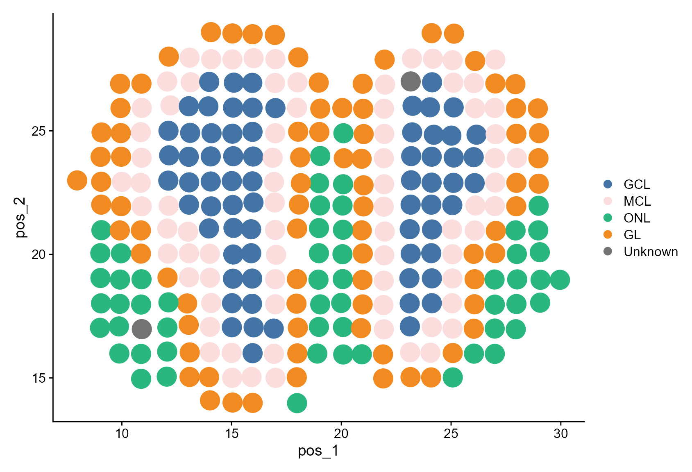
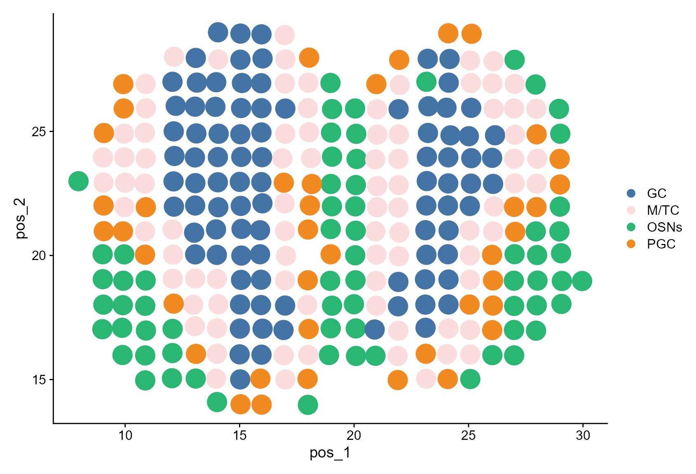
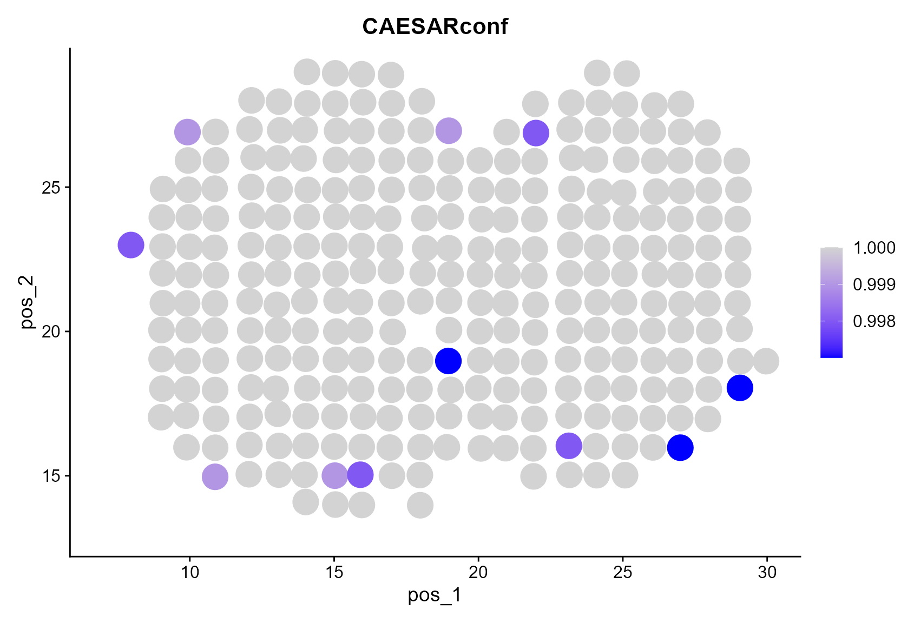
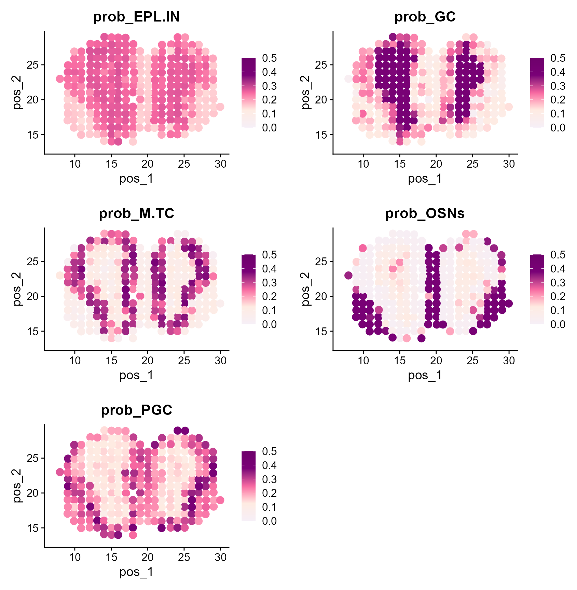
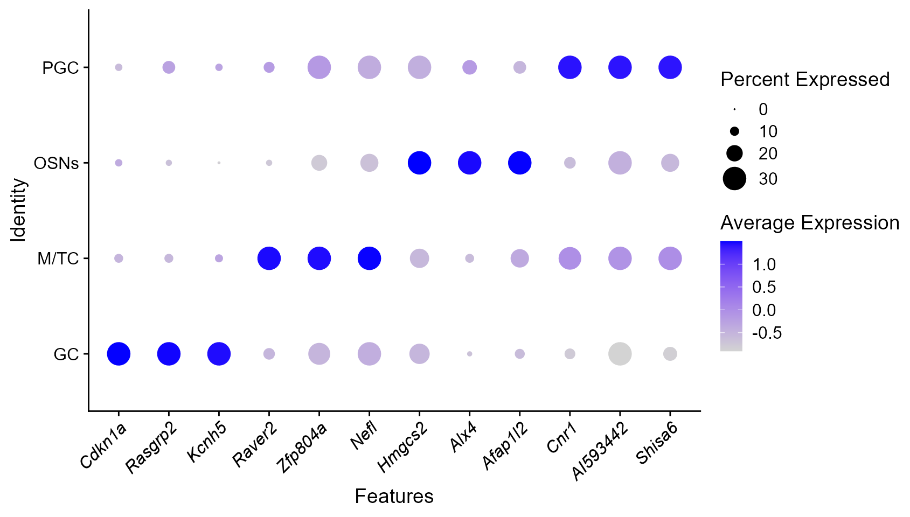
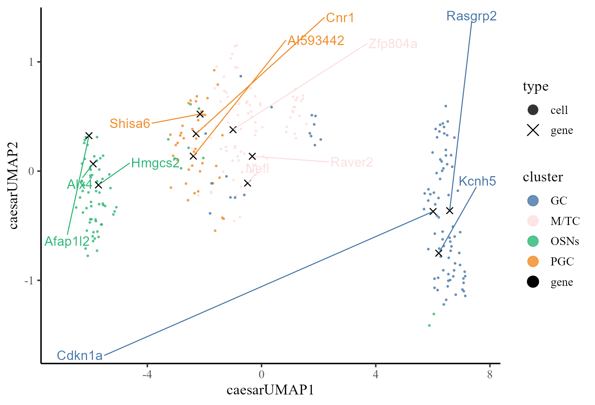

This vignette introduces the CAESAR.Suite workflow for the analysis of MOB ST spatial transcriptomics dataset. In this vignette, the workflow of CAESAR.Suite consists of four steps
- Reference dataset and target dataset preprocessing
- Detect signature genes as cell type markers from scRNA-seq reference data
- Annotate MOB ST data using CAESAR
- Downstream analysis (i.e. , signature gene analysis, visualization of cell types and coembeddings)
Load and quality control both reference and target data
We demonstrate the use of CAESAR to MOB data, which can be downloaded and load to the current working path by the following command:
githubURL <- "https://github.com/XiaoZhangryy/CAESAR.Suite/blob/master/vignettes_data/MOB_ST.rda?raw=true"
MOB_ST_file <- file.path(tempdir(), "MOB_ST.rda")
download.file(githubURL, MOB_ST_file, mode='wb')
load(MOB_ST_file)
print(MOB_ST)
#> Loading required package: SeuratObject
#> Loading required package: sp
#> An object of class Seurat
#> 16034 features across 282 samples within 1 assay
#> Active assay: RNA (16034 features, 0 variable features)
githubURL <- "https://github.com/XiaoZhangryy/CAESAR.Suite/blob/master/vignettes_data/MOB_scRNA.rda?raw=true"
MOB_scRNA_file <- file.path(tempdir(), "MOB_scRNA.rda")
download.file(githubURL, MOB_scRNA_file, mode='wb')
load(MOB_scRNA_file)
print(MOB_scRNA)
#> An object of class Seurat
#> 18560 features across 12801 samples within 1 assay
#> Active assay: RNA (18560 features, 0 variable features)The package can be loaded with the command:
set.seed(1) # set a random seed for reproducibility.
library(CAESAR.Suite) # load the package of CAESAR method
#>
#>
library(Seurat)
library(ProFAST)
#> Warning: package 'ProFAST' was built under R version 4.3.3
#> Loading required package: gtools
library(ggplot2)Users can perform appropriate quality control on the reference dataset and target data. Genes expressed in less than one cell are required to remove to avoid unknown errors. Other quality control steps can be set by the user according to the data quality. Here, cells with less than five genes and genes expressed in less than one cell were excluded.
MOB_ST <- CreateSeuratObject(
counts = MOB_ST@assays$RNA@counts,
meta.data = MOB_ST@meta.data,
min.features = 5,
min.cells = 1
)
print(MOB_ST)
#> An object of class Seurat
#> 16034 features across 280 samples within 1 assay
#> Active assay: RNA (16034 features, 0 variable features)
MOB_scRNA <- CreateSeuratObject(
counts = MOB_scRNA@assays$RNA@counts,
meta.data = MOB_scRNA@meta.data,
min.features = 5,
min.cells = 1
)
print(MOB_scRNA)
#> An object of class Seurat
#> 17812 features across 12801 samples within 1 assay
#> Active assay: RNA (17812 features, 0 variable features)Preprocessing and align reference and target data
First, we normalize the data and select the variable genes. We align genes and variable genes of reference and target data.
# align genes
common_genes <- intersect(rownames(MOB_ST), rownames(MOB_scRNA))
MOB_ST <- MOB_ST[common_genes, ]
MOB_scRNA <- MOB_scRNA[common_genes, ]
print(length(common_genes))
#> [1] 13895
MOB_ST <- NormalizeData(MOB_ST)
MOB_ST <- FindVariableFeatures(MOB_ST, nfeatures = 2000)
MOB_scRNA <- NormalizeData(MOB_scRNA)
MOB_scRNA <- FindVariableFeatures(MOB_scRNA, nfeatures = 2000)
common_vgs <- intersect(VariableFeatures(MOB_ST), VariableFeatures(MOB_scRNA))
VariableFeatures(MOB_ST) <- common_vgs
VariableFeatures(MOB_scRNA) <- common_vgs
print(length(common_vgs))
#> [1] 508Detect signature genes for each cell type using scRNA-seq reference data
We introduce how to use CAESAR to detect signature genes form scRNA-seq reference data. First, we calculate the co-embeddings.
MOB_scRNA <- ProFAST::NCFM(MOB_scRNA, q = 50)
#> Warning in asMethod(object): sparse->dense coercion: allocating vector of size
#> 1.3 GiB
#> 2024-09-12 20:19:55.485497 : ***** Finish CoFAST, 0.137 mins elapsed.Then, we detect signature genes.
# calculate cell-gene distance
MOB_scRNA <- ProFAST::pdistance(MOB_scRNA, reduction = "ncfm")
#> Calculate co-embedding distance...
# identify signature genes
print(table(MOB_scRNA$CellType))
#>
#> EPL-IN GC M/TC OSNs PGC
#> 161 8614 1133 1200 1693
Idents(MOB_scRNA) <- MOB_scRNA$CellType
sg_sc_List <- find.sig.genes(MOB_scRNA)
str(sg_sc_List)
#> List of 5
#> $ EPL-IN:'data.frame': 13895 obs. of 5 variables:
#> ..$ distance : num [1:13895] 0.0672 0.0676 0.0677 0.0678 0.0678 ...
#> ..$ expr.prop : num [1:13895] 0.0559 0.0807 0.0932 0.0621 0.0683 ...
#> ..$ expr.prop.others: num [1:13895] 0.000791 0.001503 0.000712 0.001503 0.005696 ...
#> ..$ label : chr [1:13895] "EPL-IN" "EPL-IN" "EPL-IN" "EPL-IN" ...
#> ..$ gene : chr [1:13895] "Gpr101" "Col25a1" "Chrna2" "Mal2" ...
#> $ GC :'data.frame': 13895 obs. of 5 variables:
#> ..$ distance : num [1:13895] 0.061 0.061 0.061 0.0611 0.0611 ...
#> ..$ expr.prop : num [1:13895] 0.334 0.419 0.329 0.341 0.573 ...
#> ..$ expr.prop.others: num [1:13895] 0.152 0.225 0.173 0.204 0.343 ...
#> ..$ label : chr [1:13895] "GC" "GC" "GC" "GC" ...
#> ..$ gene : chr [1:13895] "Bcl11a" "Auts2" "Tnik" "Gabra2" ...
#> $ M/TC :'data.frame': 13895 obs. of 5 variables:
#> ..$ distance : num [1:13895] 0.063 0.063 0.063 0.0631 0.0631 ...
#> ..$ expr.prop : num [1:13895] 0.685 0.518 0.145 0.336 0.703 ...
#> ..$ expr.prop.others: num [1:13895] 0.0258 0.02211 0.00291 0.00471 0.03771 ...
#> ..$ label : chr [1:13895] "M/TC" "M/TC" "M/TC" "M/TC" ...
#> ..$ gene : chr [1:13895] "Cdhr1" "Nmb" "Dkkl1" "Tmem163" ...
#> $ OSNs :'data.frame': 13895 obs. of 5 variables:
#> ..$ distance : num [1:13895] 0.0575 0.0576 0.0576 0.0576 0.0576 ...
#> ..$ expr.prop : num [1:13895] 0.1917 0.2125 0.2875 0.0575 0.4192 ...
#> ..$ expr.prop.others: num [1:13895] 0.00862 0.01259 0.01983 0.00233 0.0325 ...
#> ..$ label : chr [1:13895] "OSNs" "OSNs" "OSNs" "OSNs" ...
#> ..$ gene : chr [1:13895] "Efcab10" "Tstd1" "Stoml3" "Sult1d1" ...
#> $ PGC :'data.frame': 13895 obs. of 5 variables:
#> ..$ distance : num [1:13895] 0.0536 0.0536 0.0537 0.0537 0.0537 ...
#> ..$ expr.prop : num [1:13895] 0.0756 0.2936 0.2073 0.3438 0.0845 ...
#> ..$ expr.prop.others: num [1:13895] 0.00765 0.0334 0.02782 0.03988 0.009 ...
#> ..$ label : chr [1:13895] "PGC" "PGC" "PGC" "PGC" ...
#> ..$ gene : chr [1:13895] "Igfbp3" "Cacnb2" "Cacna2d2" "AI593442" ...Finally, select marker genes for each cell type from the signature gene list.
marker <- marker.select(sg_sc_List, overlap.max = 1)
print(marker)
#> $`EPL-IN`
#> [1] "Kit" "Slc24a2" "Cdh13" "Slc7a14" "Chl1" "Lgi2"
#> [7] "Olfm3" "Vgf" "Shisa9" "Resp18" "Ache" "Disp2"
#> [13] "Thy1" "Cntnap1" "Tmem178" "Clstn3" "Enpp5" "Slc35f1"
#> [19] "Sema3e" "Endod1" "Nell2" "Nceh1" "Slc6a17" "Sorcs3"
#> [25] "Gaa" "Dner" "Lgi3" "Pcyox1" "Tmem130" "Syngr3"
#> [31] "Kcnc2" "Gns" "Chga" "Wnt5a" "Megf8" "Degs1"
#> [37] "Lgmn" "Atp9a" "Cd200" "Chgb" "Ptprf" "Spock2"
#> [43] "Gas6" "Ctsb" "Syt13" "Edil3" "Omg" "Slc35g2"
#> [49] "Gabra1" "Smpd1" "Tmem132b" "Lynx1" "Syt4" "Tmem38a"
#> [55] "Pcdh20" "Hsd17b12" "Slc2a13" "Plxna2" "Ajap1" "Bcap29"
#> [61] "Cntn2" "Mgat5b" "Sez6l2" "Syngr1" "Nfe2l1" "Slc9a6"
#> [67] "Atp6ap1"
#>
#> $GC
#> [1] "Bcl11a" "Auts2" "Tnik" "Gabra2" "Celf2" "Hivep2"
#> [7] "Sipa1l1" "Rprml" "Tmem191c" "Negr1" "Ampd2" "Plcb1"
#> [13] "Ddx5" "Il1rapl1" "Syne1" "Fus" "Grin2b" "Ahi1"
#> [19] "Cstf3" "Cspg5" "Ccnt2" "Dcx" "Qk" "Pnn"
#> [25] "Dnmt3a" "Celf5" "Celf3" "Gria2" "Zcchc9" "Dlgap4"
#> [31] "Thoc2" "Luc7l3" "Baiap2" "Srsf11" "Ogt" "Tra2b"
#> [37] "Rasa1" "Abi2" "Stxbp5l" "Ddx17" "Ralgps2" "Ppp1cc"
#> [43] "Actn4" "Nudcd3" "Meg3" "Tia1" "Prr7" "Celf1"
#> [49] "Sf3b1" "Ank2" "Arhgef2" "Ewsr1" "Nat14" "Ppfia2"
#> [55] "Uhrf2" "Ube3a" "Sag" "Huwe1" "Hnrnph1" "Ccnl2"
#> [61] "Dhx30" "Golgb1" "Ildr2" "Ipo13" "Leng8" "Pbx3"
#> [67] "Srsf2"
#>
#> $`M/TC`
#> [1] "Cdhr1" "Nmb" "Dkkl1" "Tmem163" "Slc17a7" "Crim1"
#> [7] "Atp6ap1l" "Kitl" "Thsd7a" "Ms4a15" "Chst15" "Cbln1"
#> [13] "Reln" "Ptchd2" "Spp1" "Chst8" "Sdc3" "Kcna2"
#> [19] "Crh" "Sv2b" "Nrn1" "Sema3d" "Scube1" "Lrrtm1"
#> [25] "Galnt14" "Cntn4" "Tspan9" "Cbln4" "Hapln4" "Slc6a7"
#> [31] "L1cam" "Shisa3" "Nptx1" "Ndnf" "Wbscr17" "Lrrc55"
#> [37] "Adcyap1" "Igf1" "Slc20a1" "Lhfp" "Sema7a" "Lingo1"
#> [43] "Adora1" "Npr1" "Slc38a3" "Tgfa" "Nell1" "Otop2"
#> [49] "Slc17a6" "Mdga1" "Eomes" "Plcxd2" "Adam11" "Cyp4x1"
#> [55] "Spock1" "Tspan17" "Hapln1" "Ctgf" "Atrnl1" "Grm1"
#> [61] "Nptx2" "Cd302" "Dhcr24" "Abhd3" "Scn2b" "Grm7"
#> [67] "Arhgdig"
#>
#> $OSNs
#> [1] "Efcab10" "Tstd1" "Stoml3" "Omp" "Pth2" "Nrn1l"
#> [7] "Acbd7" "Riiad1" "Atf5" "Spa17" "Nme5" "Fam213b"
#> [13] "Ctxn3" "Trak2" "Scrib" "Jakmip1" "Tshz2" "Ppp1r14b"
#> [19] "Plekhb1" "Gm20594" "Mcf2l" "Mycbp" "Macrod1" "Gng13"
#> [25] "Tbc1d9b" "S100a5" "Atox1" "Tesc" "S100a13" "Mt2"
#> [31] "Tpt1" "Anapc13" "Pfdn2" "Kif5b" "Rps12" "Rpl22"
#> [37] "Uba52" "Wdr89" "Pdrg1" "Rpl12" "Ndufv3" "Rpl30"
#> [43] "Rplp2" "Tomm7" "Pfdn5" "Rps20" "Adipor1" "Myeov2"
#> [49] "Rpl23a" "Rpl39" "Rps24" "S100b" "Rpl28" "Rps7"
#> [55] "Rps9" "Ost4" "Rplp1" "Fau" "Rps2" "Rpl10"
#> [61] "Rps10" "Ndufa1" "Rpl36" "Rps13" "Rps21" "Mt1"
#> [67] "Sod1"
#>
#> $PGC
#> [1] "Cacnb2" "Cacna2d2" "AI593442" "Pde1c" "Dcdc2a" "Whrn"
#> [7] "Plvap" "Rgs7" "Gpr22" "Nxph1" "Syndig1l" "Cnr1"
#> [13] "Pde5a" "Asic4" "Rgs10" "Ttc28" "Nppa" "Sipa1l2"
#> [19] "Mtss1" "Pard6g" "Reps2" "Mgll" "Grem1" "Kcnj12"
#> [25] "Tle2" "Car4" "Dnajc12" "Zfp385a" "Pik3r3" "Tmem176b"
#> [31] "Diras2" "Inpp4b" "Egf" "Coprs" "Msi1" "Insm1"
#> [37] "Gm11549" "Cdkn1b" "B3galt2" "Enho" "Pdzrn4" "Plekhb2"
#> [43] "Samd14" "Msi2" "Mrps6" "Magi1" "Spon1" "Crem"
#> [49] "Kif22" "Gng2" "Apold1" "Rnd3" "Flywch2" "Cyth1"
#> [55] "Sbk1" "Vstm2l" "Pag1" "Ppa1" "Necab1" "Fam49a"
#> [61] "Foxn3" "Dbp" "Tmem108" "Tmem169" "Fabp3" "Nap1l5"
#> [67] "Prmt2"Annotate the MOB ST data using CAESAR and marker genes from scRNA-seq reference data
Similarly, we first calculate co-embeddings for MOB ST dataset. The difference is that spatial transcriptome data has spatial coordinates information, so we can obtain spatial aware co-embeddings.
# the spatial coordinates
pos <- MOB_ST@meta.data[, c("x", "y")]
print(head(pos))
#> x y
#> 16.918x16.996 16.918 16.996
#> 18.017x17.034 18.017 17.034
#> 20.075x17.059 20.075 17.059
#> 18.979x17.065 18.979 17.065
#> 21.937x16.967 21.937 16.967
#> 20.899x17.015 20.899 17.015
MOB_ST <- CAESAR.coembedding(MOB_ST, pos, reduction.name = "caesar", q = 50)
#> The spatial cooridnates are 2 dimensions
#> Find the adjacency matrix by bisection method...
#> Current radius is 200.5
#> Median of neighborhoods is 2
#> Current radius is 100.75
#> Median of neighborhoods is 279
#> Current radius is 50.88
#> Median of neighborhoods is 279
#> Current radius is 25.94
#> Median of neighborhoods is 279
#> Current radius is 13.47
#> Median of neighborhoods is 279
#> Current radius is 7.23
#> Median of neighborhoods is 233
#> Current radius is 4.12
#> Median of neighborhoods is 105.5
#> Current radius is 2.56
#> Median of neighborhoods is 43
#> Current radius is 1.78
#> Median of neighborhoods is 19
#> Current radius is 1.78
#> Median of neighborhoods is 8
#> Finish variable intialization
#> Satrt ICM and E-step!
#> Finish ICM and E-step!
#> iter = 2, loglik= 93961.618824, dloglik=1.000044
#> Satrt ICM and E-step!
#> Finish ICM and E-step!
#> iter = 3, loglik= 95904.848879, dloglik=0.020681
#> Satrt ICM and E-step!
#> Finish ICM and E-step!
#> iter = 4, loglik= 96392.301448, dloglik=0.005083
#> Satrt ICM and E-step!
#> Finish ICM and E-step!
#> iter = 5, loglik= 96683.214511, dloglik=0.003018
#> Satrt ICM and E-step!
#> Finish ICM and E-step!
#> iter = 6, loglik= 96874.024782, dloglik=0.001974
#> Satrt ICM and E-step!
#> Finish ICM and E-step!
#> iter = 7, loglik= 97008.159784, dloglik=0.001385
#> Satrt ICM and E-step!
#> Finish ICM and E-step!
#> iter = 8, loglik= 97106.416775, dloglik=0.001013
#> Satrt ICM and E-step!
#> Finish ICM and E-step!
#> iter = 9, loglik= 97180.663023, dloglik=0.000765
#> Satrt ICM and E-step!
#> Finish ICM and E-step!
#> iter = 10, loglik= 97238.089763, dloglik=0.000591
#> Satrt ICM and E-step!
#> Finish ICM and E-step!
#> iter = 11, loglik= 97283.339881, dloglik=0.000465
#> Satrt ICM and E-step!
#> Finish ICM and E-step!
#> iter = 12, loglik= 97319.556554, dloglik=0.000372
#> Satrt ICM and E-step!
#> Finish ICM and E-step!
#> iter = 13, loglik= 97348.931983, dloglik=0.000302
#> Satrt ICM and E-step!
#> Finish ICM and E-step!
#> iter = 14, loglik= 97373.021477, dloglik=0.000247
#> Satrt ICM and E-step!
#> Finish ICM and E-step!
#> iter = 15, loglik= 97392.947057, dloglik=0.000205
#> Satrt ICM and E-step!
#> Finish ICM and E-step!
#> iter = 16, loglik= 97409.538654, dloglik=0.000170
#> Satrt ICM and E-step!
#> Finish ICM and E-step!
#> iter = 17, loglik= 97423.430702, dloglik=0.000143
#> Satrt ICM and E-step!
#> Finish ICM and E-step!
#> iter = 18, loglik= 97435.124354, dloglik=0.000120
#> Satrt ICM and E-step!
#> Finish ICM and E-step!
#> iter = 19, loglik= 97445.025103, dloglik=0.000102
#> Satrt ICM and E-step!
#> Finish ICM and E-step!
#> iter = 20, loglik= 97453.464916, dloglik=0.000087
#> Satrt ICM and E-step!
#> Finish ICM and E-step!
#> iter = 21, loglik= 97460.715878, dloglik=0.000074
#> Satrt ICM and E-step!
#> Finish ICM and E-step!
#> iter = 22, loglik= 97466.999772, dloglik=0.000064
#> Satrt ICM and E-step!
#> Finish ICM and E-step!
#> iter = 23, loglik= 97472.495863, dloglik=0.000056
#> Satrt ICM and E-step!
#> Finish ICM and E-step!
#> iter = 24, loglik= 97477.347771, dloglik=0.000050
#> Satrt ICM and E-step!
#> Finish ICM and E-step!
#> iter = 25, loglik= 97481.669671, dloglik=0.000044
#> 2024-09-12 20:20:05.539317 : ***** Finish calculate CAESAR embedding, 0.035 mins elapsed.
print(MOB_ST)
#> An object of class Seurat
#> 13895 features across 280 samples within 1 assay
#> Active assay: RNA (13895 features, 508 variable features)
#> 1 dimensional reduction calculated: caesarSubsequently, the CAESAR co-embeddings and marker genes from scRNA-seq reference data are used to annotate the MOB ST data.
# convert marker list to marker frequency matrix
marker.freq <- markerList2mat(list(marker))
# perform annotation using CAESAR and save results to Seurat object
print(colnames(MOB_ST@meta.data))
#> [1] "orig.ident" "nCount_RNA" "nFeature_RNA"
#> [4] "x" "y" "manual_annotation"
MOB_ST <- CAESAR.annotation(MOB_ST, marker.freq, reduction.name = "caesar", add.to.meta = TRUE)
#> Calculate co-embedding distance...
#> Warning: package 'purrr' was built under R version 4.3.3
print(colnames(MOB_ST@meta.data))
#> [1] "orig.ident" "nCount_RNA" "nFeature_RNA"
#> [4] "x" "y" "manual_annotation"
#> [7] "CAESAR" "CAESARunasg" "CAESARconf"
#> [10] "dist_EPL.IN" "dist_GC" "dist_M.TC"
#> [13] "dist_OSNs" "dist_PGC" "prob_EPL.IN"
#> [16] "prob_GC" "prob_M.TC" "prob_OSNs"
#> [19] "prob_PGC"Downstream analysis
In the following, we visualize the CAESAR annotation results.
# set up colors
cols_manual <- setNames(
c(
"#4374A5", "#FCDDDE", "#2AB67F", "#F08A21", "#737373"
),
c(
"GCL", "MCL", "ONL", "GL", "Unknown"
)
)
celltypes_manual <- c("GCL", "MCL", "ONL", "GL", "Unknown")
cols <- setNames(
c(
"#4374A5", "#FCDDDE", "#2AB673", "#F08A21", "#E04D50", "#737373"
),
c(
"GC", "M/TC", "OSNs", "PGC", "EPL-IN", "unassigned"
)
)
celltypes <- c("GC", "M/TC", "OSNs", "PGC", "EPL-IN", "unassigned")
colnames(pos) <- paste0("pos", 1:2)
MOB_ST@reductions[["pos"]] <- CreateDimReducObject(
embeddings = as.matrix(pos),
key = paste0("pos", "_"), assay = "RNA"
)First, we visualize the manual annotation.
Idents(MOB_ST) <- factor(MOB_ST$manual_annotation, levels = celltypes_manual)
DimPlot(MOB_ST, reduction = "pos", cols = cols_manual, pt.size = 8)
Then, we visualize the CAESAR annotation without account for ‘unassigned’.
Idents(MOB_ST) <- factor(MOB_ST$CAESAR, levels = celltypes)
DimPlot(MOB_ST, reduction = "pos", cols = cols, pt.size = 8)
And visualize the CAESAR annotation account for ‘unassigned’.
Idents(MOB_ST) <- factor(MOB_ST$CAESARunasg, levels = celltypes)
DimPlot(MOB_ST, reduction = "pos", cols = cols, pt.size = 8)
The confidence level of the CAESAR annotation can be visualized by
FeaturePlot(
MOB_ST,
reduction = "pos", features = "CAESARconf", pt.size = 8,
cols = c("blue", "lightgrey"), min.cutoff = 0.0, max.cutoff = 1.0
)
CAESAR provides the cell mixing proportion for each cell type, which can be visualized by
caesar_prob <- colnames(MOB_ST@meta.data)[15:19]
print(caesar_prob)
#> [1] "prob_EPL.IN" "prob_GC" "prob_M.TC" "prob_OSNs" "prob_PGC"
plots <- lapply(caesar_prob, function(feature) {
FeaturePlot(MOB_ST, features = feature, reduction = "pos", pt.size = 3.5) +
scale_color_gradientn(
colors = c("#f6eff7", "#feebe2", "#f768a1", "#7a0177", "#6e016b"),
values = scales::rescale(c(0.0, 0.125, 0.25, 0.375, 0.50)),
limits = c(0.0, 0.50)
) + labs(title = feature)
})
#> Scale for colour is already present.
#> Adding another scale for colour, which will replace the existing scale.
#> Scale for colour is already present.
#> Adding another scale for colour, which will replace the existing scale.
#> Scale for colour is already present.
#> Adding another scale for colour, which will replace the existing scale.
#> Scale for colour is already present.
#> Adding another scale for colour, which will replace the existing scale.
#> Scale for colour is already present.
#> Adding another scale for colour, which will replace the existing scale.
cowplot::plot_grid(plotlist = plots, ncol = 2)
The annotation accuracy is calculated by
acc_st <- function(manual_annotation, pred) {
manual_annotation <- as.character(manual_annotation)
pred <- as.character(pred)
manual_annotation[manual_annotation == "GCL"] <- "GC"
manual_annotation[manual_annotation == "MCL"] <- "M/TC"
manual_annotation[manual_annotation == "ONL"] <- "OSNs"
manual_annotation[manual_annotation == "GL"] <- "PGC"
return(mean(manual_annotation == pred))
}
print(paste0(
"The ACC of CAESAR annotation is ",
acc_st(MOB_ST$manual_annotation, MOB_ST$CAESARunasg)
))
#> [1] "The ACC of CAESAR annotation is 0.717857142857143"Next, we detect and visualize the signature genes for each cell type.
Idents(MOB_ST) <- factor(MOB_ST$CAESARunasg, celltypes)
sg_List <- find.sig.genes(MOB_ST)
str(sg_List)
#> List of 4
#> $ GC :'data.frame': 13895 obs. of 5 variables:
#> ..$ distance : num [1:13895] 5.49 5.49 5.52 5.53 5.56 ...
#> ..$ expr.prop : num [1:13895] 0.344 0.422 0.322 0.322 0.256 ...
#> ..$ expr.prop.others: num [1:13895] 0.0842 0.0947 0.0579 0.0421 0.0421 ...
#> ..$ label : chr [1:13895] "GC" "GC" "GC" "GC" ...
#> ..$ gene : chr [1:13895] "Cdkn1a" "Rasgrp2" "Kcnh5" "Kcnh1" ...
#> $ M/TC:'data.frame': 13895 obs. of 5 variables:
#> ..$ distance : num [1:13895] 6.69 6.74 6.74 6.75 6.75 ...
#> ..$ expr.prop : num [1:13895] 0.3494 0.0964 0.6627 0.7711 0.3012 ...
#> ..$ expr.prop.others: num [1:13895] 0.1066 0.0152 0.2792 0.3147 0.1015 ...
#> ..$ label : chr [1:13895] "M/TC" "M/TC" "M/TC" "M/TC" ...
#> ..$ gene : chr [1:13895] "Raver2" "Slc16a10" "Zfp804a" "Nefl" ...
#> $ OSNs:'data.frame': 13895 obs. of 5 variables:
#> ..$ distance : num [1:13895] 9.69 9.72 9.73 9.73 9.73 ...
#> ..$ expr.prop : num [1:13895] 0.836 0.448 0.612 0.701 0.493 ...
#> ..$ expr.prop.others: num [1:13895] 0.2582 0.0892 0.1643 0.1315 0.1174 ...
#> ..$ label : chr [1:13895] "OSNs" "OSNs" "OSNs" "OSNs" ...
#> ..$ gene : chr [1:13895] "Hmgcs2" "Alx4" "Afap1l2" "Igfbp4" ...
#> $ PGC :'data.frame': 13895 obs. of 5 variables:
#> ..$ distance : num [1:13895] 7.71 7.74 7.74 7.77 7.77 ...
#> ..$ expr.prop : num [1:13895] 0.55 0.825 0.6 0.35 0.5 0.075 0.375 0.2 0.1 0.85 ...
#> ..$ expr.prop.others: num [1:13895] 0.183 0.412 0.267 0.188 0.192 ...
#> ..$ label : chr [1:13895] "PGC" "PGC" "PGC" "PGC" ...
#> ..$ gene : chr [1:13895] "Cnr1" "AI593442" "Shisa6" "Kcnj12" ...We visualize the top three signature genes by a dot plot.
# obtain the top three signature genes
celltypes_plot <- setdiff(names(sg_List), "unassigned")
top3sgs <- Intsg(list(sg_List), 3)[celltypes_plot]
print(top3sgs)
#> $GC
#> [1] "Cdkn1a" "Rasgrp2" "Kcnh5"
#>
#> $`M/TC`
#> [1] "Raver2" "Zfp804a" "Nefl"
#>
#> $OSNs
#> [1] "Hmgcs2" "Alx4" "Afap1l2"
#>
#> $PGC
#> [1] "Cnr1" "AI593442" "Shisa6"
sg_features <- unname(unlist(top3sgs))
DotPlot(
MOB_ST,
idents = celltypes_plot, col.min = -1, col.max = 2, dot.scale = 7,
features = sg_features, scale.min = 0, scale.max = 30
) + theme(axis.text.x = element_text(face = "italic", angle = 45, vjust = 1, hjust = 1))
#> Warning: Scaling data with a low number of groups may produce misleading
#> results
Next, we calculate the UMAP projections of co-embeddings of cells and the selected signature genes.
# calculate coumap
MOB_ST <- CoUMAP(
MOB_ST, reduction = "caesar", reduction.name = "caesarUMAP",
gene.set = sg_features
)
df_gene_label <- data.frame(
gene = unlist(top3sgs),
label = rep(names(top3sgs), each = 3)
)
CoUMAP.plot(
MOB_ST, reduction = "caesarUMAP", gene_txtdata = df_gene_label,
cols = c("gene" = "#000000", cols)
)
Session Info
sessionInfo()
#> R version 4.3.1 (2023-06-16 ucrt)
#> Platform: x86_64-w64-mingw32/x64 (64-bit)
#> Running under: Windows 11 x64 (build 22631)
#>
#> Matrix products: default
#>
#>
#> locale:
#> [1] LC_COLLATE=Chinese (Simplified)_China.utf8
#> [2] LC_CTYPE=Chinese (Simplified)_China.utf8
#> [3] LC_MONETARY=Chinese (Simplified)_China.utf8
#> [4] LC_NUMERIC=C
#> [5] LC_TIME=Chinese (Simplified)_China.utf8
#>
#> time zone: Asia/Shanghai
#> tzcode source: internal
#>
#> attached base packages:
#> [1] stats graphics grDevices utils datasets methods base
#>
#> other attached packages:
#> [1] purrr_1.0.2 ggplot2_3.5.1 ProFAST_1.4 gtools_3.9.5
#> [5] Seurat_4.4.0 CAESAR.Suite_0.1.0 SeuratObject_4.1.4 sp_2.1-4
#>
#> loaded via a namespace (and not attached):
#> [1] fs_1.6.4 matrixStats_1.3.0
#> [3] spatstat.sparse_3.1-0 bitops_1.0-8
#> [5] httr_1.4.7 RColorBrewer_1.1-3
#> [7] tools_4.3.1 sctransform_0.4.1
#> [9] backports_1.5.0 utf8_1.2.4
#> [11] R6_2.5.1 lazyeval_0.2.2
#> [13] uwot_0.2.2 withr_3.0.1
#> [15] prettyunits_1.2.0 gridExtra_2.3
#> [17] progressr_0.14.0 cli_3.6.3
#> [19] Biobase_2.62.0 textshaping_0.4.0
#> [21] spatstat.explore_3.3-2 labeling_0.4.3
#> [23] sass_0.4.9 mvtnorm_1.2-6
#> [25] spatstat.data_3.1-2 proxy_0.4-27
#> [27] ggridges_0.5.6 pbapply_1.7-2
#> [29] pkgdown_2.0.6 systemfonts_1.1.0
#> [31] harmony_1.2.1 scater_1.30.1
#> [33] parallelly_1.38.0 readxl_1.4.3
#> [35] rstudioapi_0.16.0 RSQLite_2.3.7
#> [37] FNN_1.1.4 generics_0.1.3
#> [39] ica_1.0-3 spatstat.random_3.3-1
#> [41] car_3.1-2 dplyr_1.1.4
#> [43] Matrix_1.6-1.1 ggbeeswarm_0.7.2
#> [45] fansi_1.0.6 DescTools_0.99.56
#> [47] S4Vectors_0.40.2 abind_1.4-5
#> [49] lifecycle_1.0.4 yaml_2.3.10
#> [51] CompQuadForm_1.4.3 carData_3.0-5
#> [53] SummarizedExperiment_1.32.0 SparseArray_1.2.4
#> [55] BiocFileCache_2.10.2 Rtsne_0.17
#> [57] grid_4.3.1 blob_1.2.4
#> [59] promises_1.3.0 crayon_1.5.3
#> [61] GiRaF_1.0.1 miniUI_0.1.1.1
#> [63] lattice_0.21-8 beachmat_2.18.1
#> [65] cowplot_1.1.3 KEGGREST_1.42.0
#> [67] pillar_1.9.0 knitr_1.48
#> [69] GenomicRanges_1.54.1 boot_1.3-28.1
#> [71] gld_2.6.6 future.apply_1.11.2
#> [73] codetools_0.2-19 leiden_0.4.3.1
#> [75] glue_1.7.0 spatstat.univar_3.0-0
#> [77] data.table_1.16.0 vctrs_0.6.5
#> [79] png_0.1-8 spam_2.10-0
#> [81] org.Mm.eg.db_3.18.0 cellranger_1.1.0
#> [83] gtable_0.3.5 cachem_1.1.0
#> [85] xfun_0.47 S4Arrays_1.2.1
#> [87] mime_0.12 survival_3.5-5
#> [89] SingleCellExperiment_1.24.0 fitdistrplus_1.2-1
#> [91] ROCR_1.0-11 nlme_3.1-162
#> [93] bit64_4.0.5 filelock_1.0.3
#> [95] progress_1.2.3 RcppAnnoy_0.0.22
#> [97] GenomeInfoDb_1.38.8 bslib_0.8.0
#> [99] irlba_2.3.5.1 vipor_0.4.7
#> [101] KernSmooth_2.23-21 colorspace_2.1-1
#> [103] BiocGenerics_0.48.1 DBI_1.2.3
#> [105] ade4_1.7-22 Exact_3.3
#> [107] tidyselect_1.2.1 DR.SC_3.4
#> [109] curl_5.2.2 bit_4.0.5
#> [111] compiler_4.3.1 BiocNeighbors_1.20.2
#> [113] expm_1.0-0 xml2_1.3.6
#> [115] desc_1.4.3 DelayedArray_0.28.0
#> [117] plotly_4.10.4 scales_1.3.0
#> [119] lmtest_0.9-40 rappdirs_0.3.3
#> [121] stringr_1.5.1 digest_0.6.37
#> [123] goftest_1.2-3 spatstat.utils_3.1-0
#> [125] rmarkdown_2.28 XVector_0.42.0
#> [127] htmltools_0.5.8.1 pkgconfig_2.0.3
#> [129] sparseMatrixStats_1.14.0 MatrixGenerics_1.14.0
#> [131] highr_0.11 dbplyr_2.5.0
#> [133] fastmap_1.2.0 rlang_1.1.4
#> [135] htmlwidgets_1.6.4 ggthemes_5.1.0
#> [137] shiny_1.9.1 DelayedMatrixStats_1.24.0
#> [139] farver_2.1.2 jquerylib_0.1.4
#> [141] zoo_1.8-12 jsonlite_1.8.8
#> [143] BiocParallel_1.36.0 mclust_6.1.1
#> [145] BiocSingular_1.18.0 RCurl_1.98-1.16
#> [147] magrittr_2.0.3 scuttle_1.12.0
#> [149] GenomeInfoDbData_1.2.11 dotCall64_1.1-1
#> [151] patchwork_1.2.0 munsell_0.5.1
#> [153] Rcpp_1.0.13 viridis_0.6.5
#> [155] reticulate_1.38.0 furrr_0.3.1
#> [157] stringi_1.8.4 rootSolve_1.8.2.4
#> [159] zlibbioc_1.48.2 MASS_7.3-60
#> [161] org.Hs.eg.db_3.18.0 plyr_1.8.9
#> [163] parallel_4.3.1 PRECAST_1.6.5
#> [165] listenv_0.9.1 ggrepel_0.9.5
#> [167] lmom_3.0 deldir_2.0-4
#> [169] Biostrings_2.70.3 splines_4.3.1
#> [171] tensor_1.5 hms_1.1.3
#> [173] igraph_2.0.3 ggpubr_0.6.0
#> [175] spatstat.geom_3.3-2 ggsignif_0.6.4
#> [177] reshape2_1.4.4 biomaRt_2.58.2
#> [179] stats4_4.3.1 ScaledMatrix_1.10.0
#> [181] XML_3.99-0.17 evaluate_0.24.0
#> [183] httpuv_1.6.15 RANN_2.6.2
#> [185] tidyr_1.3.1 polyclip_1.10-7
#> [187] future_1.34.0 scattermore_1.2
#> [189] rsvd_1.0.5 broom_1.0.6
#> [191] xtable_1.8-4 e1071_1.7-14
#> [193] rstatix_0.7.2 later_1.3.2
#> [195] viridisLite_0.4.2 class_7.3-22
#> [197] ragg_1.3.2 tibble_3.2.1
#> [199] memoise_2.0.1 beeswarm_0.4.0
#> [201] AnnotationDbi_1.64.1 IRanges_2.36.0
#> [203] cluster_2.1.4 globals_0.16.3